Porting IQ 2D SDF Shadertoys to Unreal - Part 3
Last time we changed the look of our shader to match Inigo Quilez's demos on shadertoy, but we kind of left it with a bunch of glaring differences and issues :
- The colors are washed out
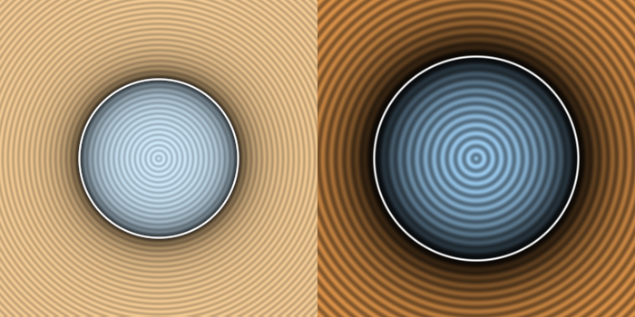
- Stretching happens if we resize the viewport
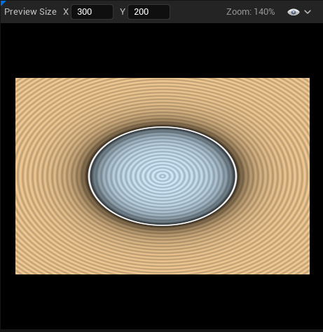
- The numbers we enter don't match Inigo's shader
Each issue isn't too bad individually, but as we're going to get into the more complex SDF functions I'd like it if we could just copy Inigo's samples directly and compare the output images. It'll make things easier to debug as we go along. I also think it's going to be an interesting exercise to dive a bit more into how those shaders work and have a better understanding on how to translate shaders from Shadertoy to Unreal. So let's tackle them one by one !
My colors are all washed out !
The first glaring issue is the colors, they look all vibrant and clean on shadertoy and although we copied the exact RGB they're all whitened out in Unreal ! What's up with that ?
To be completely honest I'm not a graphical engineer, I don't really do colors, I don't really do shaders, but I kind of understand the concepts and I like hearing about them ray tracers and color corrections and tone mapping, and hey, we're here to learn ! So when I saw those washed out colors, I got a vague memory about a gamma correction discussion that happened at some point when speaking about shadertoy and color spaces. Going from that vague memory I checked the gamma correction wiki page and picked the magic formula, Vout = A * Vin ^ Gamma, and added some nodes and lo and behold :
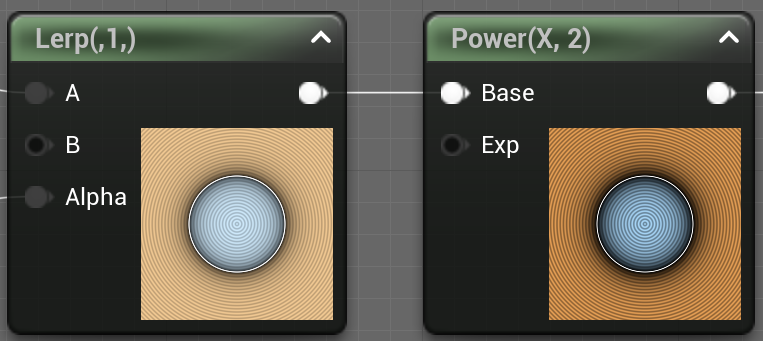
So ok, that seems to be the solution... Let's try to understand what's up though.
Gamma Correction
Reading the article this all comes from the way human beings perceive light and colors. Your human eye (if you have at least one of them) is much more sensible to darker tone variations than to lighter ones. In more mathy terms, if you have some light in the [0, 1] range (0 being full dark and one being full light), you would see a much color difference in a gradient going from 0.1 to 0.2, than in a gradient going from 0.8 to 0.9. I think intuitively it makes sense when I try to think of a very "light" scene (like on a snow field) all colors "feel" white, but in a darker scene (like when the sun is setting), you tend to perceive a lot more details in the color variations.
So from there, usually we think about RGB computer colors as a triplet value in the [0, 1] range, with the color increasing linearly. If we take the red channel only for example, going from 0.1 to 0.2 adds as much "red" as going from 0.8 to 0.9 even though your brain would interpret the first as a much bigger gradient than the second one ! If we were saving the color linearly, like when taking a picture, we would waste a lot of bits to encode gradients we can't perceive, and on the other end we wouldn't have enough values to represent colors we can actually perceive.
To resolve that issue, instead of directly showing a 0.5 pixels to the screen, we perform a mapping function that's going to transform the input values onto a curve that gives more room for darker values and less room for lighter ones.
The process is called "Gamma Correction" and that's what we're doing when we put our color value to the power of some Gamma value. If you check the article the usual value for computer screens gamma correction is 2.2, and it maps the input values on this curve :
You can see that the curve is kind of "compressed" to the right. Going from a color value of 0.1 to 0.2 increases the output from 0.0063 to 0.029 (0.0227 increase), while going from 0.8 to 0.9 goes from 0.61 to 0.79 (0.18 increase, so almost 8 times more). This means that we can represent more values in the lower end of the spectrum than in the higher end, which makes it better for human perception !
What this means in Unreal
As you might have guessed at this point, Unreal is actually doing something automatically related to this color correction. We can verify that by taking some screenshots ! Instead of our complex output, we can just plug a simple Vector 4 with a 0.5 Grey color, take a screenshot, and check what the output color is.
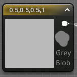
I've added a 0.5 grey blob from paint.net next to the node on the image so we have a reference. Using the mighty color picker tool we can get values ! Our grey blob reports at 0.5 as expected, but the unreal 0.5 vector reports at 0.73 ! If you check back to the Desmos curve, you can see that an X value of 0.73 actually matches our expected 0.5, put in other words Unreal is doing the invert of the gamma correction ! Essentially what's happening here is that Unreal is expecting the input to be gamma corrected, and is automatically applying an invert function that puts the color back to uniform space before presenting it to the screen.
I was a bit confused by this at first, but I found this article dating back to Unreal 3 that reaches the same conclusion and explains why Unreal does this : artbyplunkett.com/
From what I understand this is the result of expectations from the painting program and screen output that doesn't work when rendering those assets in a 3D space. So Unreal is effectively counteracting the gamma curve function by applying the invert, resulting in a physically correct 3D rendering.
Aight, from there we can get mathy and explain exactly why doing the pow(X, 2.2) gives us the "correct" output. Unreal is just applying a pow(X, 1/2.2) to the output, so by pow'ing our value before we get this :
- pow(pow(X, 2.2), 1 / 2.2) = pow(X, 2.2 / 2.2) = pow(X, 1) = X
And so we get back our original color.
In Practice
Actually at that point I realized that the Unreal color picker had a "sRGB Preview" checkbox that actually talks directly about the gamma correction (┬┬﹏┬┬). Unchecking it doesn't change the resulting color but it does make the preview show the exact 0.5 expected color.
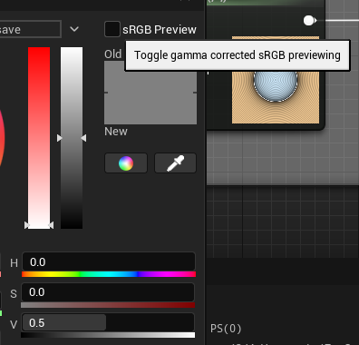
So anyway, let's intercept our color output before sending it to the Final Color node with a Power 2.2 node and tada !
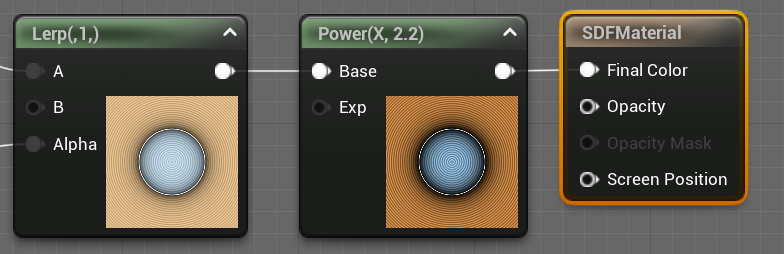
It's looking pretty vibrant now ╰(°▽°)╯, compared to IQ's shadertoy it's pretty much the same. One problem fixed, let's go to the next !
Aspect Ratio Correctness
The next issue we'll solve is the unexpected stretch of our SDF output when the viewport resizes. To do that we simply need to transform the input UVs in a way that makes them uniform even if we change the length of one side.
Our UV coordinate ranges from [0, 1] on both axis without any consideration for the image aspect ratio, we can do a bit of math to reinject some viewport information into those values.
Assuming we've got a vector (x, y) with 0 <= x <= 1.0 and 0 <= y <= 1.0 (our uniform UVs), and we've got a vector (width, height) representing our destination rectangle size :
1 2 3 4 5 | |
I've omitted the 0 <= part since it doesn't change anyways. Also the width / height quantity is usually called the aspect ratio of the rectangle so I've swapped the names.
Porting this to our material, we conveniently have a Pixel Size input in our graph, we're going to use the Component Mask node to access the height (or Y, or G) component of our rect size. And after some math nodes :
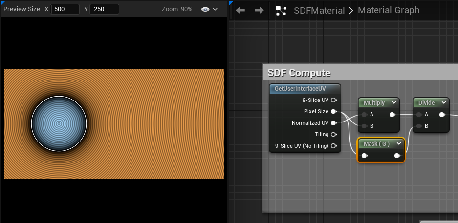
We can now resize the X axis all we want and we no longer have stretching !
Now going back to the original shadertoy, we can see that IQ is actually doing the same-ish kind of computation as us :
1 | |
Ignoring the multiply and substract part for now, we see that he divides by the viewport height, which matches line (3) of our computation ! Shadertoy fragCoord value is actually not normalized compared to our Normalized UV pin. So he directly get the result value of line (2) and just needs to divide ╰(°▽°)╯
Aight, there's actually one last thing I want to do, we've tested a viewport that's larger than tall, meaning the aspect ratio is greater than 1. What happens if we make it taller than large ?
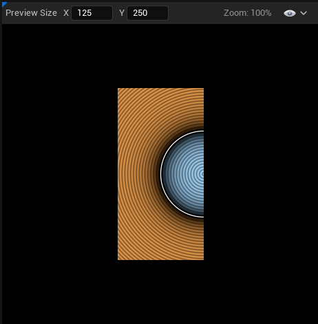
Our circle get bisected (┬┬﹏┬┬)
This is an easy fix though, depending on which is smaller, the width or the height, we actually want to divide by that value.
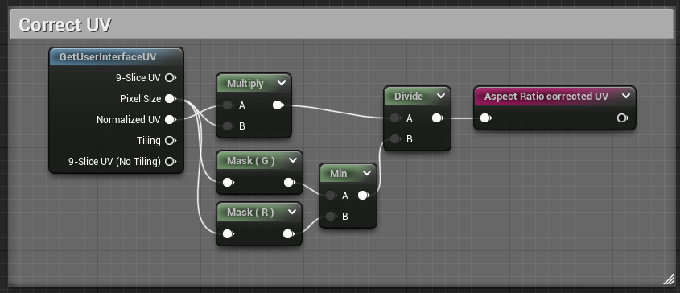
And now our circle is full even if we make the rect too small for it ╰(°▽°)╯
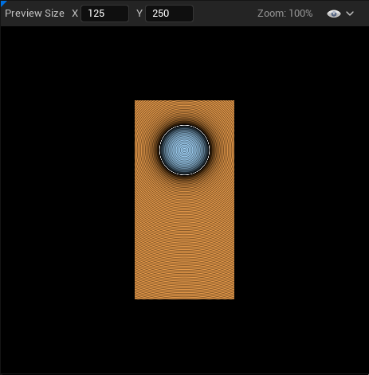
To be fair it might not be the behavior you want since it makes the final picture resize in potentially unexpected ways, I just wanted to mention the math for funsies.
Correcting dimensions and numbers
On to the last issue, the numbers Jason, they do not match ! As we were building the current visual we took some liberties with the input numbers to roughly match the Shadertoy demo, but it bothers me that they don't. We're doing standard math here, nothing that should trigger rounding issues or architecture differences that would lead to widely different visuals. We should be able to directly input the Shadertoy's number in our shader and have everything match perfectly ! So let's go through all the magic numbers in our shader, see how they differ from the Shadertoy, and get them fixed. We'll see that the root cause is fairly obvious but it's good to know precisely what we're dealing with.
- Circle radius : 0.25 (expected 0.5)
- UV Translation : 0.5 (expected 0)
- Shadow constant multiply : -16 (expected -6)
- Wave frequency multiplier : 60 (expected 150)
- Outline Smooth Step : 0.005 (expected 0.01)
Thankfully most of those have the same root issue, we just don't work in the same coordinate system as Inigo's shader. The wave issue though... That one special and will have it's own section.
Adjusting our coordinate system
If you've been attentive, you might have noticed that I lied a little bit in the last part, and that we kind of corrected it-ish while doing the aspect ratio shenanigans but I glossed over it... Let's go back to the p computation :
1 2 3 4 5 | |
Inigo's code scale's and translates p directly, he has two goals :
- Ensure
p == (0, 0)is in the middle of the rectangle - Have the coordinates in the [-1, 1] range
Compared to us, we currently have (0, 0) be in the top left corner, and our coordinates are in the [0, 1] range. This actually directly explains the factor 2 in the circle radius, the shadow constant, and the outline smooth step ! And also why we have a 0.5 translation to center our circle. Let's fix that !
The added nodes are fairly simple, starting from our coordinates in the [0, (width, height)] range we want to shift them so they are in the [(-width, -height), (width, height)] range, after that we can do the division to normalize them in the [(-aspect_ratio, -1), (aspect_ratio, 1)] range.
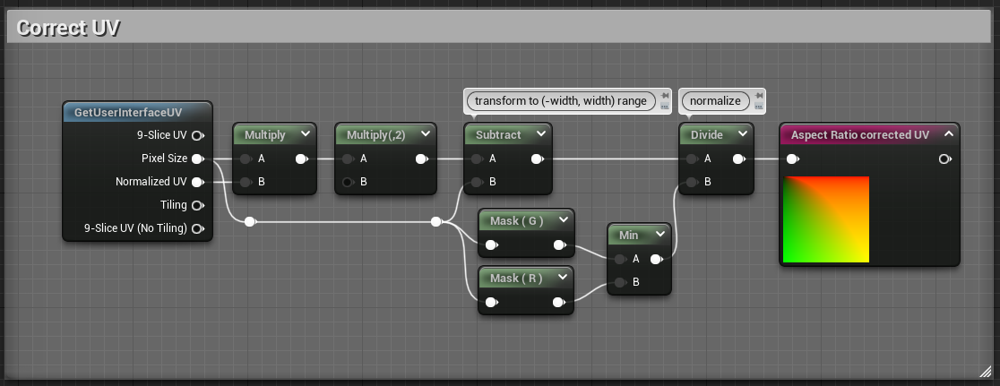
If we check the output now, it's all wrong (⊙_⊙;). But that's expected ! Remember that all our values assumed the wrong coordinate system.
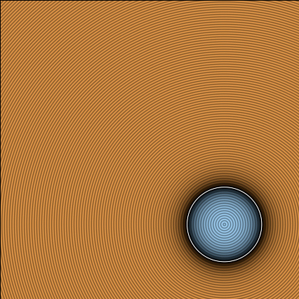
Let's go around and fix everything ! Follow the arrows :
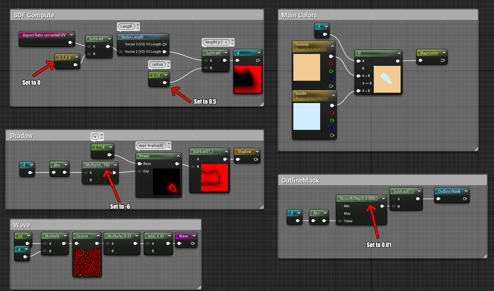
And voilà ! Your circle should actually look very close to the Shadertoy demo at this point, we could stop there but I wanted to understand what's up with the cosine frequency, I mean a cosine is a cosine, there's no reason to have different results !
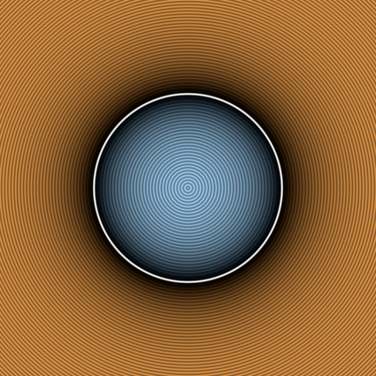
Fixing the Waves
Last but not least, the waves. The core of the issue is that the frequency is all wrong. If you put the value back to 150, there's a lot more peaks than what we see in Shadertoy... But who's wrong ? Is Shadertoy/GLSL cosine doing something weird ? Or is it Unreal ? The way I went about it is first checking the math.
The nature of a cosine function is a wavy pattern that has peaks and creases, by counting the number of peaks you can deduce the frequency, and the height is the amplitude. We modulate the amplitude with the 0.2 multiply, a cosine outputs a value in the [-1, 1] range, so with the multiply we get a value in the [-0.2, 0.2] range and the add drives it to [0.6, 1.0], comparing the colors we can see that there's no difference there between Unreal and Shadertoy (at least after gamma correction fixup).
So the issue is fundamentally with the frequency, or particularly with what's happening inside the cosine. To have some certitudes I plotted the distance function and the cosine in desmos, and we're going to look at the part inside the circle, so d(x) < 0 :
I've also offset the cosine curve so it's packed with the distance function so we can see exactly what the value is at the circle border. Essentially we want to count the number of peaks between x=0, which is the circle's center, and x=0.5, where the outline is. If the shadertoy circle has as many peaks as the desmos curve between those two points, then we now that the frequency is correct, and that Unreal is doing something weird !
On the above curve you can count 13 peaks, let's check the shadertoy :
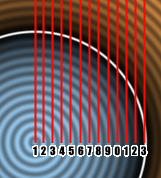
And we count 13 peaks too ! So something's definitely wrong with the Unreal cosine function. I'm not going to count them but the frequency is waaayyy off than what we would expect from inputting those number in the cosine function.
Funnily enough, if you try to search for a good value in unreal that gives us 13 peaks, you'll find something in the 24 range... And if you compute the ratio between 150 and 24 you get 6.25, which you might notice is suspiciously close to 2*π (or τ if you're the kind of person that likes being right). Well just to burst the bubble now, divide 150 by 2*π and you get approx. 23.87, and if you input that into Unreal, you'll get your 13 peaks (⊙_⊙;)... So what's up Unreal ? Well, that's our punishment for not reading the documentation and having programmer expectation from math nodes. Let's check the Cosine node:
|
Item |
Description |
|
|---|---|---|
|
Properties |
||
|
Period |
Specifies the period of the resultant wave. In other words, this is how long one full oscillation takes to occur, or the time between each successive crest or each successive trough in the waveform. For example, in the image above, the period is one second. |
|
Oh.
There's a Period parameter attached to the cosine node that implicitly scales the cosine frequency so it matches, and it defaults to 1... The standard frequency of a cosine function is actually 2*π, so the way I interpret this is that it multiplies whatever input we give to the node by (2*π) / Period. From there we have 2 ways to fix this, either we bake the frequency (the *150) in the Period node parameter, or we set the Period to 2*π to cancel the computation inside and keep the 150 outside the node. I think both are fine depending on what you want, I'm going to show both method but I'll be keeping the 2nd one for the future.
Baking into the period
As stated, the node is taking whatever you have as input and outputs cosine( Input * 2*π / Period ). And the result we want is actually cosine( Input * K ) where K is whatever we want, and in this particular case 150. So resolving quickly we want K = 2*π / Period <=> K * Period = 2*π <=> Period = 2*π / K. Taking your favorite calculator, I like to approximate π by 3.14159 as it's easy to remember and has enough precision, you get Period = 0.0419. Select the node, go in the details panel and input that value. Also set the 150 multiply to 1 and check the result !
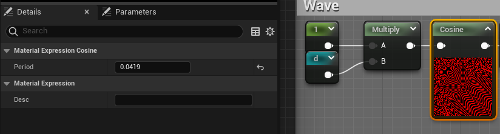
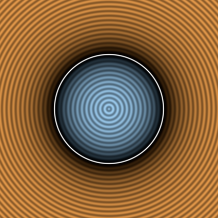
Alright ! That's pretty good and looks very much like the Shadertoy demo ! Let's check the 2nd method that's fairly similar
Having the value outside
If we take the initial formula back cosine( Input * 2*π / Period ). If we want to bake the 150 in the Input instead of the Period, it's as simple as having the right hand side = 1, so we just want to have 2*π / Period = 1 <=> Period = 2*π, which gives us Period = 6.28318
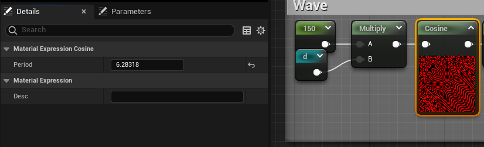
This makes the 150 easy to modify, but all in all it doesn't matters a lot.
Wrapping up
Alright ! We've fixed the 3 major points I wanted, if we match the size of the shadertoy viewport with unreal, make some screenshot and apply a diff filter, we can actually check how accurate we are :
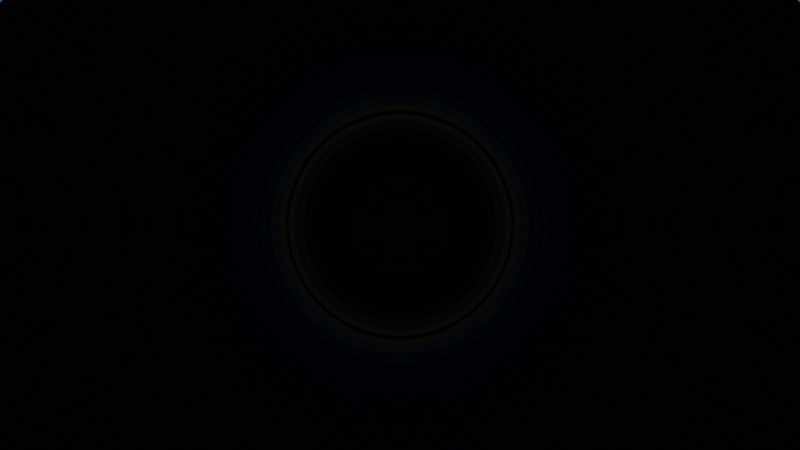
It's... it's not completely black... Honestly at that point it might be a whole bunch of stuff. It feels like some compression artifact, but I can't be bothered to go find the exact cause... It's honestly close enough and to be honest I don't think it's an issue with shadertoy or unreal in itself, it's possibly some compression artifact caused by either windows screenshots, or Paint.net paste result. So let's appreciate our hard work !
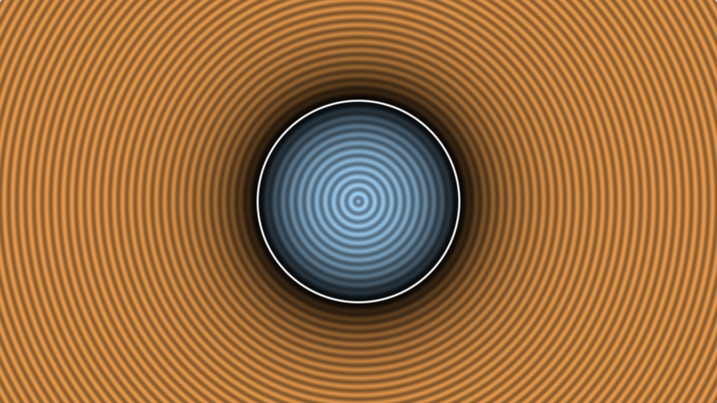
I've pasted the current blueprint state on blueprintue.com :
Next time we'll be diving into the meat of SDF functions and implement a bunch !